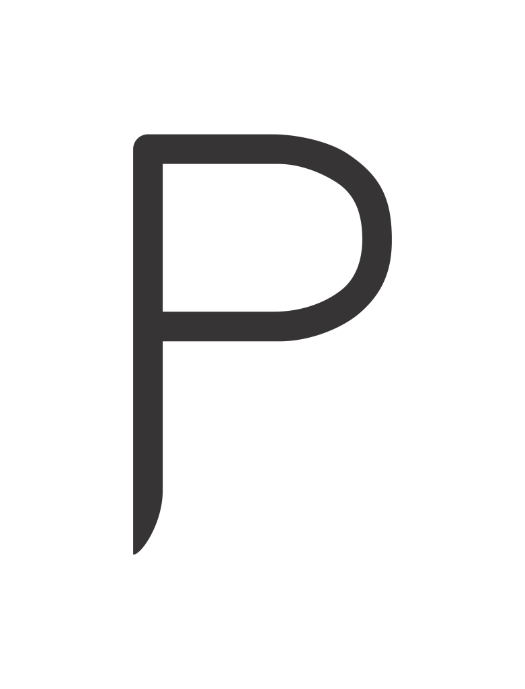
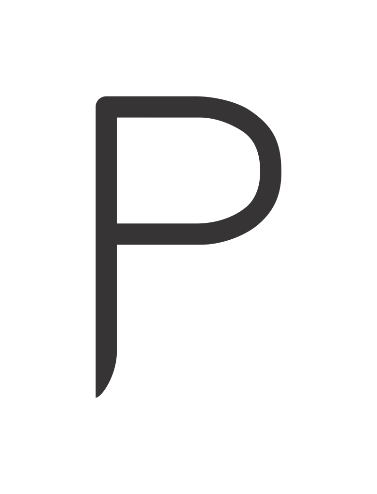
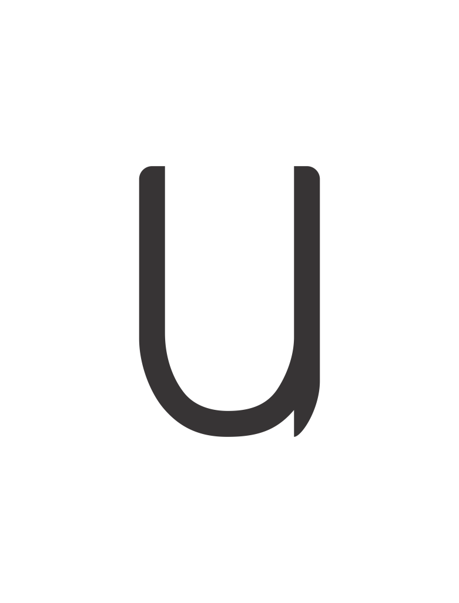
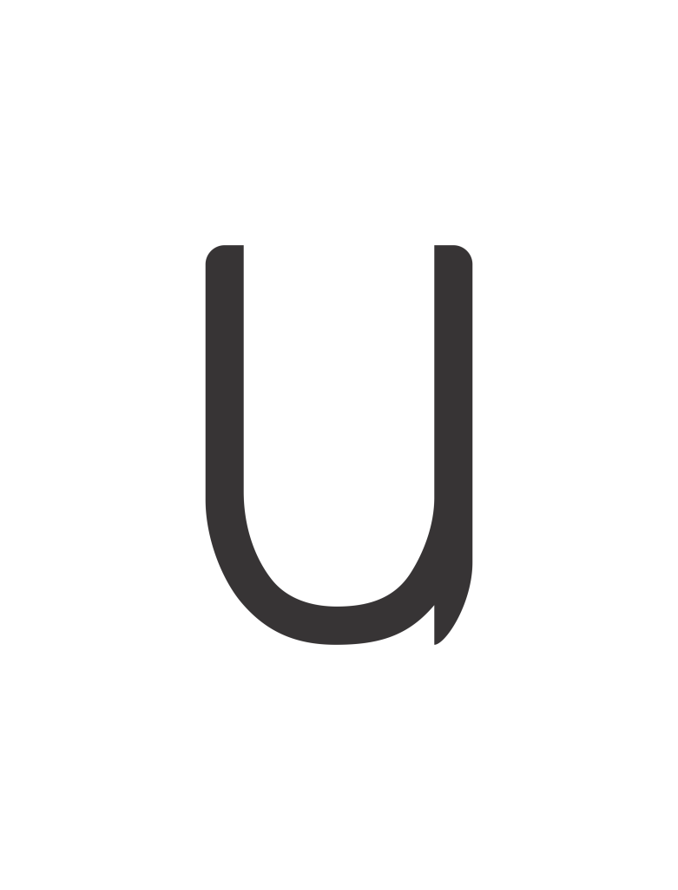

Glyphs
Fonte Temática do Futurismo
Esta é uma coleção de glifos que eu desenvolvi para uma fonte conceitual sobre o tema futurismo. Meu principal esforço foi no sentido de capturar algumas das tendências visuais do movimento, tais como o domínio de linhas retas e curvas, acompanhadas por pontas afiadas, enquanto procurei manter a simplicidade visual. Busquei com estes elementos sugerir velocidade e movimento.
This is a collection of glyphs that I developed for a conceptual font about the theme Futurism. My main focus was to capture some of the visual trends in the movement, such as the dominance of straight and curved lines, along with sharp edges, while mantaining visual simplicity. I resorted to these graphic elements to suggest movement and speed.


 


 
